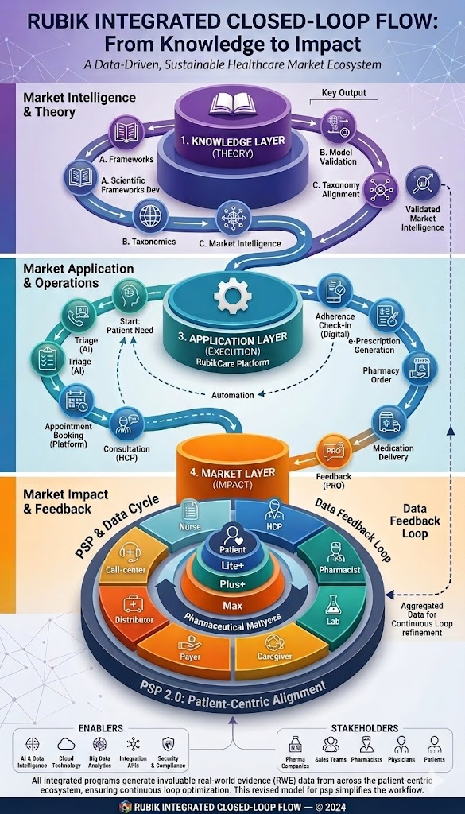

How fragmented market interactions transform into complete, sustainable cycles — generating data, enabling control, and optimizing every stakeholder's journey.

Diagram — Image not found. Please place closed-loops-diagram.jpg in: assets/images/
A closed loop is a complete cycle that starts with a stakeholder's need, passes through all relevant touchpoints, and returns with data that improves the entire system. It doesn't stop mid‑journey — it completes the circle.
1. Symptom Recognition: Instead of random searching, the AI asks patients about their symptoms to understand the condition.
2. Intelligent Routing: Based on responses, the system determines the appropriate specialty — Internal Medicine, Cardiology, Orthopedics, etc.
3. Urgency Triage: The AI determines whether the case requires immediate hospital care, an online consultation, or a routine clinic appointment.
4. Data Preparation: Collected information is packaged and presented to the physician before the visit — reducing consultation time and increasing accuracy.
| Tier | Scope | Key Features | Outcome |
|---|---|---|---|
| Lite | Basic digital entry | Appointment booking, e‑prescription, basic reminders | Patient enters the loop — basic data collection begins |
| Plus | Continuous engagement | Symptom tracking, medication delivery, personalized educational content | Richer data — adherence patterns, treatment experience |
| Max | Full clinical oversight | Nursing follow‑up, loyalty programs, laboratory integration | Maximum RWE — full visibility into patient journey |
| Stakeholder | Traditional / Fragmented Tools | Closed Loop Approach |
|---|---|---|
| Patient | Booking only (Vezeeta) Delivery only (Yodawy) | Search → AI Triage → Book → eRX → Pharmacy → Reminders → Feedback |
| Physician | Isolated CME or basic scheduling | CME → Clinic OS → eRX → Patient data → Improved practice |
| Pharmacist | Ordering from distributors only | eRX → Dispense → Direct pharma orders → Content → Loyalty |
| Medical Rep | Paper-based visit tracking | Plan → Schedule → Visit → Dual evaluation → Performance improvement |
| Pharma Company | No direct patient data | PSP design → Enrollment → RWE collection → Product optimization |
All closed-loop operations are designed to comply with Egyptian Data Protection Law (Law No. 151 of 2020) and international standards. Patient data is anonymized, consent is collected at every stage, and all interactions are fully auditable. This ensures that pharmaceutical companies, healthcare providers, and patients can trust the system with complete confidence.
Each closed loop generates a set of interactions. Each interaction requires a control element. When you map all loops across all stakeholders, you naturally arrive at the 54 elements of the periodic table — organized by function, interaction potential, and position in the value chain.
"The periodic table is not designed — it is discovered. It emerges from the complete mapping of every closed loop in the market. Every element exists because somewhere, in some loop, a specific interaction needs to be measured, controlled, or optimized."
The approach described here is not about building "another app" — it is about rethinking how market interactions should be structured.